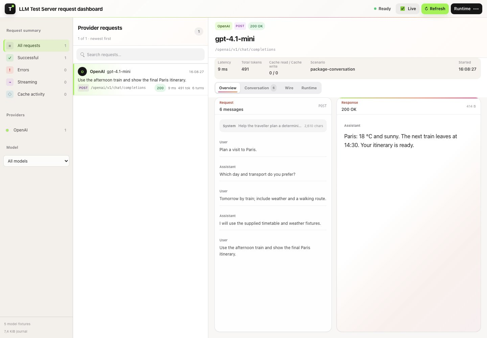

Conversation context
The whole turn of events.
Read user messages, assistant replies and tool results in order. Expand the payload when the details matter.

Built for .NET. At home in Aspire.
An LLM mock server for .NET and Aspire.
Script provider responses, streaming and tool calls locally. Use your regular SDK, then see exactly what your application sent.
ManagedCode.LlmTestServerLocal fixtures. Real HTTP and SDK calls.

A smaller loop
Keep your provider integration in the test. Choose the behavior on the other side.
Configure a model, a response or a tool call. Make the expected behavior explicit.
UseChatScenario(…)
Point a supported provider SDK or HTTP client at the local, namespaced API.
/openai/v1/chat/completions
Verify the response and recorded requests. Open the dashboard when you need the full story.
GetAssertionsAsync()
The built-in request dashboard
Provider, model, status, timing and token usage stay with the request. Select a call to inspect the response and conversation behind it.
Conversation context
Read user messages, assistant replies and tool results in order. Expand the payload when the details matter.
Runtime diagnostics
Inspect models, fixtures, provider endpoints, assertions and runtime events from the same debugging surface.

The request journal is bounded. Oversized diagnostic payloads are marked when truncated.
Beyond a single reply
Script a tool call, send its result and match the next conversation step. Use explicit branches and terminal behavior.
Conversation DSLGive each test a session with its own configuration, history, queues and journal. Reset one without resetting another.
Test sessionsReturn scripted failures, rate limits and content-filter errors. Exercise the path your happy-path fixture never reaches.
Runtime capabilitiesReturn explicit embeddings, image, audio and video fixtures on the operations supported by each provider profile.
Check operation coverageProvider-aware, by design
Provider APIs use explicit namespaces. Operation coverage varies by provider and grows incrementally.
Read the operation matrix| Provider family | Local API namespace | Contract details |
|---|---|---|
| OpenAI | /openai |
Operation matrix ↗ |
| Azure OpenAI · Microsoft Foundry | /azure-openai/microsoft-foundry |
Provider routes and SDK checks |
| Anthropic · Gemini · Amazon Bedrock | /anthropic /gemini /bedrock |
Native provider contracts |
| Groq · Mistral · Ollama · Cohere | /groq /mistral /ollama /cohere |
Provider-specific operations |
| OpenRouter · DeepSeek · Perplexity | /openrouter /deepseek /perplexity |
Provider-specific operations |
| SystemOne · Cloudflare | /systemone /cloudflare |
Native decision fixtures |
A provider profile does not imply every API is implemented. Verify the operation and client version your application uses.
Start in your AppHost
Add the Aspire package, register the resource and let Aspire allocate its endpoint. The default integration runs without Docker.
Open the complete integration test.NET 10 · Aspire AppHost
Use a local fixture key in test code.
dotnet add package ManagedCode.LlmTestServer.Aspireusing ManagedCode.LlmTestServer.Aspire;
var builder = DistributedApplication.CreateBuilder(args);
builder.AddLlmTestServer("llm-test-server")
.WithApiKey("test-key");
builder.Build().Run();Next: retrieve the Aspire resource endpoint, configure a scenario and make an SDK call. The full example includes health, auth and assertions.
Standalone alternative
Start the test server in a container. Open http://localhost:8080 for the dashboard, then load
your models, scenarios and fixtures through POST /admin-api/configure.
docker run --rm -p 8080:8080 ghcr.io/managedcode/llm-test-server:1.0.0A few useful details
The server returns the fixtures configured for your test. It models API behavior so your application can make real HTTP or SDK calls against a local server.
The default package-owned Aspire integration runs without Docker. Aspire starts the packaged .NET server and exposes its allocated resource endpoint.
Use the supported routes with the SDKs listed in the operation coverage documentation. Compatibility is verified per operation; check your client version and API requirements.
Yes. Create separate test sessions for independent configuration, scenario queues, history and diagnostics. Dispose each session when its test ends.
No. Coverage varies by provider. The operation matrix describes the claimed routes, streaming modes and SDK evidence. Provider profiles grow incrementally.
It verifies your application's behavior against scripted API fixtures. It does not measure the quality of a live model's answers.
Make the next call predictable
Start the server, script a response and inspect your first request.